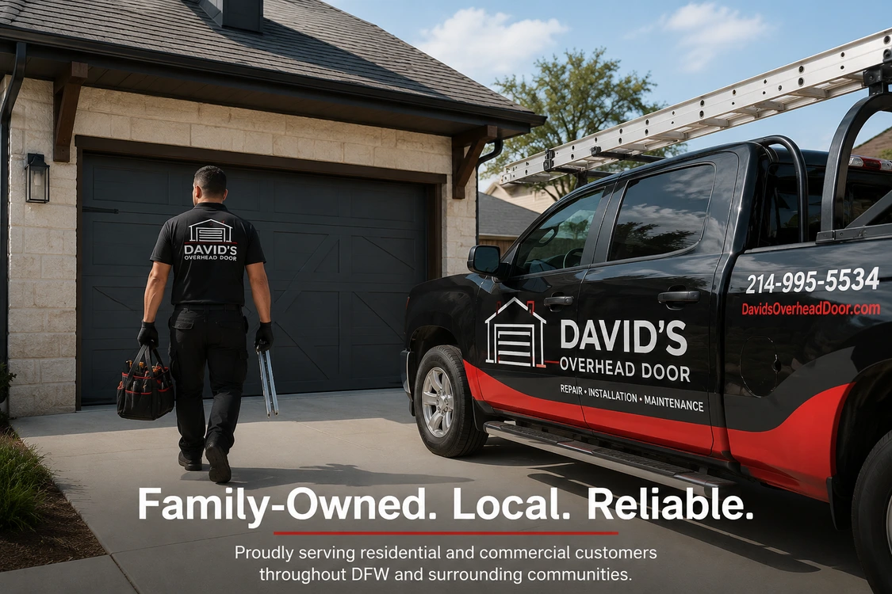
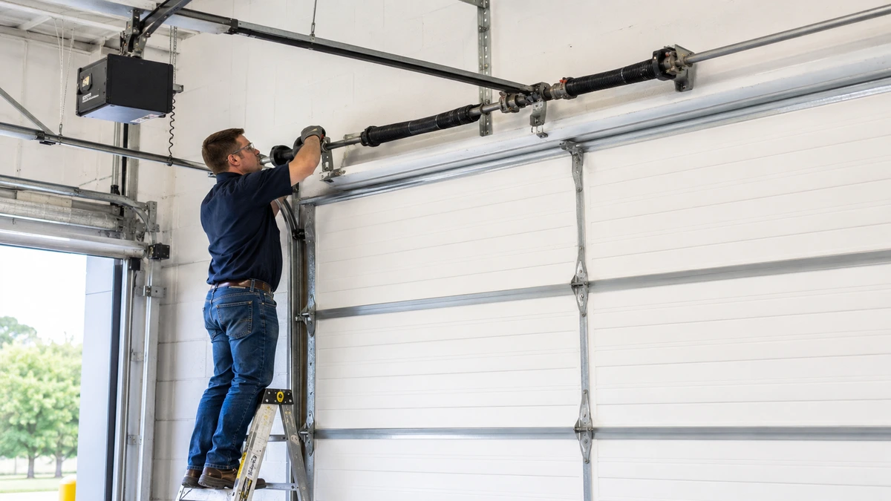
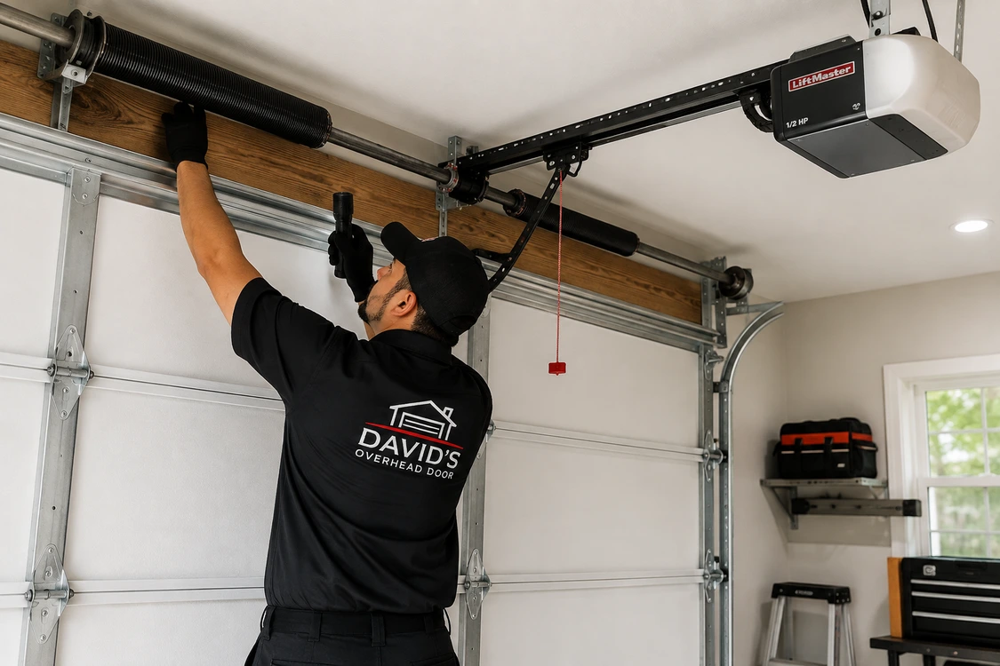

Residential Garage Doors
Repair, replacement, installation, opener service, springs, cables, rollers, tracks, hardware, and maintenance.
Residential ServicesAbout David's Overhead Door
David's Overhead Door is a family-owned and operated garage door, commercial overhead door, and automatic gate service company based in Irving, Texas, serving residential and commercial customers throughout Dallas-Fort Worth and surrounding communities.

Local Door Service
David's Overhead Door provides repair, installation, troubleshooting, replacement, and maintenance for residential garage doors and commercial overhead door systems.
David has experience working with a wide range of garage doors, overhead doors, openers, operators, hardware, and related components from numerous manufacturers.
That experience allows the company to work with many different existing systems rather than limiting service to a single manufacturer or product line.

What We Do
David's Overhead Door provides residential garage door, commercial overhead door, and automatic gate services for homeowners, businesses, property managers, and commercial facilities throughout Irving and the Dallas-Fort Worth area.
Services include repair, installation, replacement, troubleshooting, maintenance, opener and operator service, and related hardware work for a wide range of door and gate systems.
Whether the job involves a residential garage door that will not open, a damaged commercial overhead door, or an automatic gate system that needs repair or replacement, David's Overhead Door provides service for both existing systems and new installations.
Repair, replacement, installation, opener service, springs, cables, rollers, tracks, hardware, and maintenance.
Residential ServicesCommercial overhead door repair, installation, operator service, troubleshooting, adjustment, and preventive maintenance.
Commercial ServicesInstallation, repair, operator service, troubleshooting, adjustment, and maintenance for automatic slide gates, swing gates, and other automatic gate systems.
Automatic Gate Services
Service Approach
Garage and overhead door problems can involve more than one component. A door that is difficult to operate may have issues involving tracks, rollers, springs, cables, hardware, alignment, the opener, the operator, or a combination of conditions.
The goal is to identify the actual operating problem and recommend an appropriate repair or replacement based on the condition of the system.
Based in Irving, Texas
David's Overhead Door is based in Irving and provides mobile residential garage door, commercial overhead door, and automatic gate service throughout the Dallas-Fort Worth Metroplex and surrounding communities.
References are available upon request.
Service Area
Need Door Service?
Call or schedule service for residential garage doors, commercial overhead doors, automatic gates, repair, installation, troubleshooting, or maintenance.